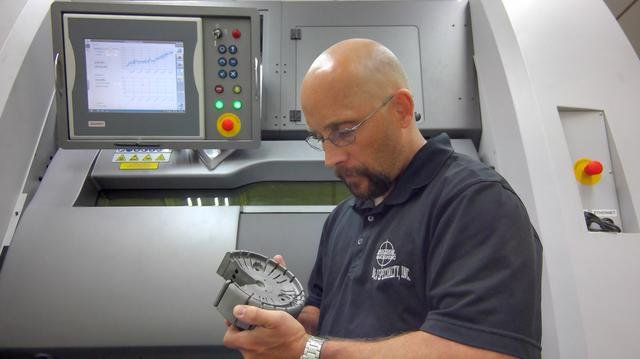
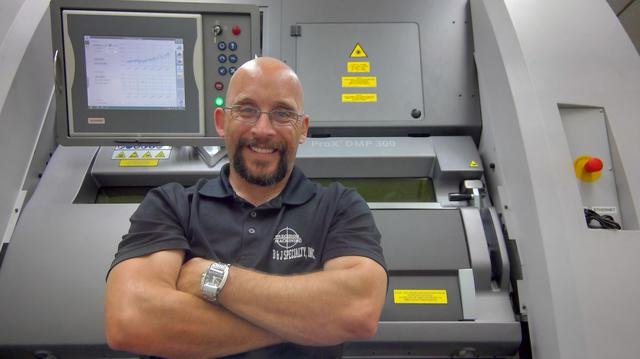

INDUSTRIA
Aumentare la produttività dello stampaggio a iniezione per un condotto automobilistico che richiedeva un lungo ciclo di attrezzaggio per evitare la deformazione.
LOCALITA
Software CAD/CAM® integrato Cimatron®.
I RISULTATI
- Accelerazione del tempo di raffreddamento del ciclo da un minuto a 40 secondi.
- Aumento del tasso di produzione dei condotti del 30%.
- Riduzione della variazione di temperatura durante il raffreddamento dell'86%.
- Estensione della durata dello stampo grazie alla riduzione della pressione di stampaggio.
- Produzione di pezzi che soddisfano costantemente i severi requisiti di qualità.
- Consegnato parti di qualità superiore con un raffreddamento più efficiente, che ha permesso di risparmiare tempo e costi per i costruttori di utensili e gli operatori degli stampi.
Grandi variazioni di temperatura in un ciclo di raffreddamento dello stampaggio a iniezione possono aumentare drasticamente il rischio di deformazione dei pezzi. Quando i test su un condotto automobilistico stampato a iniezione, progettato e prodotto in modo convenzionale, hanno prodotto fluttuazioni di temperatura di 132˚C durante l'intero processo, B&J Specialty, Inc., Inc. ha consigliato al suo cliente inserti di stampo raffreddati in modo conforme per un raffreddamento più uniforme.
Per ottenere questo risultato, gli ingegneri di B&J Specialty si sono affidati al software CAD/CAM Cimatron per progettare gli stampi e conformare i canali di raffreddamento interni parallelamente alla superficie del pezzo. Per realizzare con precisione questi complessi canali di raffreddamento interni conformi, hanno usato la produzione additiva di metallo (AM) su una stampante ProX DMP 300 per la produzione.
Il nuovo inserto dello stampo con raffreddamento conforme ha ridotto la variazione di temperatura durante il raffreddamento a 18˚C e ha ridotto il tempo di ciclo sullo stampo da un minuto a 40 secondi, un miglioramento complessivo della produttività del 30 per cento.

Linee di raffreddamento subottimali portano a variazioni di alta temperatura
Gli stampi con raffreddamento conforme sfruttano la tecnologia moderna per risolvere un problema antico. Molti pezzi stampati a iniezione hanno superfici curve, ma le punte utilizzate per creare i canali di raffreddamento producono solo linee rette. Nella maggior parte dei casi, questo significa che è impossibile far corrispondere le linee di raffreddamento alla geometria del pezzo. Le linee di raffreddamento rettilinee prodotte in modo convenzionale devono andare oltre gli elementi più esterni del pezzo per evitare di interferire con la cavità, il che significa che gli elementi più vicini al centro del pezzo sono tipicamente lontani dalla linea di raffreddamento più vicina. Questo si traduce spesso in significative variazioni di temperatura sul volume del pezzo all'inizio del processo di raffreddamento.
Il condotto automobilistico che B&J Specialty ha riprogettato per un raffreddamento più efficiente presenta più superfici irregolari e curve. Nel progetto originale dello stampo, B&J aveva praticato delle linee di raffreddamento rettilinee attraverso un mozzo e un blocco statore che servivano a regolare la geometria dello stampo per tenere conto della deformazione. Come spesso accade con le forme irregolari, diverse caratteristiche chiave del condotto erano distanziate dalle linee di raffreddamento a causa della limitazione dei canali dritti. Le variazioni di temperatura risultanti generavano varie tensioni residue che tendevano a piegare il pezzo durante il raffreddamento. In passato, questo problema veniva affrontato estendendo il ciclo di raffreddamento per assicurare che la parte fosse completamente solidificata prima di rimuoverla dallo stampo e regolando gli inserti per tenere conto di eventuali deformazioni residue. Il problema con questo approccio era che l'allungamento del ciclo di raffreddamento rid uceva la produttività e aumentava il costo di produzione del pezzo.

Aggiornare lo stampo con canali di raffreddamento conformi
Secondo Jarod Rauch, responsabile della tecnologia dell'informazione e della stampa 3D di B&J Specialty, il condotto automobilistico sembrava essere un forte candidato per un design di raffreddamento conforme modificato, che avrebbe aiutato a migliorare la qualità del pezzo finale, a ridurre gli scarti e a ridurre il ciclo di raffreddamento. B&J Specialty ha proposto questa soluzione al suo cliente, un fornitore automobilistico, che ha accettato di testare la nuova metodologia. Fornito il file CAD della geometria originale, gli ingegneri di B&J si sono messi al lavoro utilizzando il software di progettazione stampi Cimatron. ""Cimatron è praticamente un software one-stop-shop che ci permette di avere tutte le funzionalità CAD per la progettazione e ci dà la possibilità di passare direttamente alla preparazione della costruzione dallo stesso pacchetto"".
Lavorando all'interno di Cimatron, gli ingegneri di B&J hanno rimosso le linee di raffreddamento rettilinee originali e le hanno sostituite con quelle conformali che mantengono una distanza costante dalla superficie del pezzo. La produzione finale dello stampo con la stampa 3D del metallo ha permesso agli ingegneri di progettare canali complessi con sezioni trasversali e superfici di interfaccia migliorate. Queste caratteristiche aiutano a garantire un flusso turbolento, che aumenta ulteriormente la quantità di calore trasferito dallo stampo al refrigerante per aiutare il raffreddamento efficiente. La capacità di raffreddare i pezzi stampati in modo più efficiente aiuta anche a garantire la qualità dei pezzi, riducendo il verificarsi di difetti come la deformazione e i segni di sprofondamento. Un percorso diretto verso parti di qualità superiore fa risparmiare tempo e denaro sia al costruttore di utensili che all'operatore dello stampo, limitando il numero di correzioni, prove e campionature necessarie per ottenere i risultati desiderati.
Fissare le aspettative con una simulazione accurata
Gli ingegneri di B&J hanno poi esportato il file dello stampo da Cimatron al software di simulazione dello stampaggio a iniezione Moldex3D per la simulazione integrata del raffreddamento. ""L'integrazione tra Cimatron e Moldex3D rende facile simulare il ciclo completo di stampaggio a iniezione, mappare le temperature nello stampo e nel pezzo per identificare i punti caldi e freddi e simulare l'effetto di diversi tempi di raffreddamento"", dice Rauch. La simulazione aiuta anche a evidenziare le aree in cui la riprogettazione può migliorare la strategia generale di raffreddamento prima di fare qualsiasi investimento in una parte fisica"". Le simulazioni comparative tra il design dello stampo originale e il nuovo design con linee di raffreddamento conformali hanno mostrato un miglioramento drammatico nella distribuzione della temperatura per la nuova parte, riducendo la variazione di temperatura dell'86%.

Stampa 3D di inserti di stampo con linee di raffreddamento conformi
Gli ingegneri di B&J hanno poi utilizzato il software 3DXpert metal AM per preparare i progetti degli inserti di stampo per la produzione. Hanno importato i dati del pezzo, ottimizzato la geometria, calcolato il percorso di scansione, organizzato la piattaforma di costruzione e inviato il lavoro alla loro stampante 3D in metallo ProX DMP 300 direttamente dal software 3DXpert.
The ProX DMP 300 directs a high-precision laser to build up metal powder particles selectively in thin, horizontal layers, one after the other using LaserForm material. For this automotive duct mold, B&J Specialty used maraging steel material. “The ProX DMP 300 is ideal for producing conformal cooling lines because of its extraordinary accuracy,” Rauch said. “We can hold tolerances of three- or four-thousandths of an inch.” The Cimatron patented direct metal printing (DMP) technology enables smaller material particles to generate the finest feature detail and thinnest wall thicknesses. A surface finish quality of up to 5 Ra μm (200 Ra micro-inches) is achievable and requires less post-processing.

Guadagni sostanziali in termini di produttività
Dopo la stampa 3D, B&J Specialty ha scannerizzato gli inserti nel software di ispezione e metrologia Geomagic Control X usando uno scanner 3D con linea laser blu e ha sovrapposto la mesh alla geometria progettata per convalidare gli inserti metallici stampati in 3D. Gli inserti sono stati spediti al fornitore automobilistico che li ha installati sulla sua macchina di stampaggio. "I test di benchmark hanno dimostrato che il raffreddamento più uniforme fornito dalle linee conformali ha permesso di ridurre il tempo di ciclo e aumentare la produttività del 30%", ha detto Rauch. "Ci aspettiamo anche che la vita dello stampo sia sostanzialmente più alta, poiché le riduzioni del tempo di ciclo fornite dal raffreddamento conforme permettono di ridurre la pressione di iniezione, che a sua volta riduce l'usura della linea di divisione e dei dettagli intricati dello stampo".